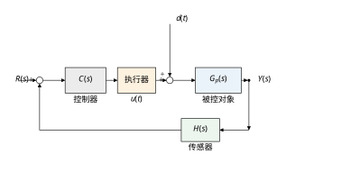
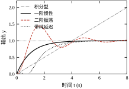
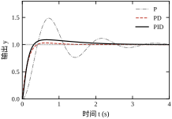
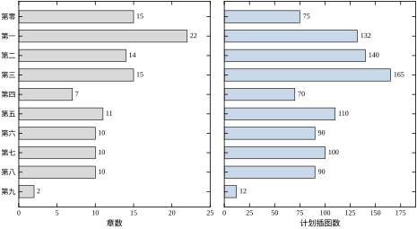
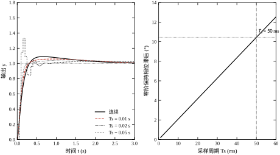

某台直线伺服轴要把工件从 0 推到 100 mm。工艺给出三条硬指标：0.30 s 内到位，超调不超过 5%，到位后不允许持续抖动。工程师先只加比例控制，把位置误差乘以增益送进驱动器。仿真结果很干脆：增益取 5 时，10%→90% 上升时间 0.162 s，看起来够快，超调却达到 63.49%，工件撞上夹具；把增益降到 0.5，超调仍有 20.93%，上升时间拖到 0.688 s，节拍翻倍。两个增益都不合格，而且继续在比例增益上找折中点也找不到——这条曲线上根本没有同时满足 0.30 s 与 5% 的点。
问题出在对象本身。该轴的开环传递函数可写成 G_p(s)=10/[s(s+2)]，是一个带惯性的积分环节：积分保证阶跃输入下稳态无差，惯性只提供 2 rad/s 的极点，阻尼很弱。比例控制把误差直接放大成推力，推力越大，轴冲得越快，也越容易冲过头。要同时要快和稳，必须引入与速度相关的阻尼项，也就是微分作用。加上 k_d=0.7 后，同样的比例增益下超调降到 3.24%，上升时间 0.254 s，调节时间从 3.7 s 压到 0.926 s。三个指标一次全部进入合格区。
这个例子说明控制工程的第一条事实：指标之间会打架，解决冲突靠改变控制器的结构，而不是在一个参数上反复试。比例增益只提供一个自由度，却要同时满足快、稳、准三个要求，数学上就不够。后面的章节会反复回到这个观点：先数一数有几个可调的自由度，再看它们各自影响哪个指标。
把这件事算清楚只需要两行。比例控制下闭环特征方程为 s^2+2s+10K_p=0，于是 \omega_n=\sqrt{10K_p}、\zeta=1/\sqrt{10K_p}。增益从 0.5 加到 5，自然频率从 2.24 rad/s 升到 7.07 rad/s，阻尼比却从 0.316 掉到 0.141，超调因此从 20.93% 涨到 63.49%。更关键的是，\zeta\omega_n=1 与增益无关，所以四条曲线的衰减包络几乎重合，调节时间都停在 3.5–3.8 s。加大比例增益只买到速度，没有买到阻尼；要改阻尼，必须在控制器里增加与误差变化率有关的项。这个结论对任何二阶欠阻尼对象都成立，也是第 37、44 章反复使用的分析套路。
任何一个反馈控制问题，都可以拆成五个要素：被控对象、执行器、传感器、控制器、扰动。图 0-1 给出它们的关系。参考输入 R(s) 从左侧进入，与反馈信号相减得到误差 E(s)=R(s)-Y(s)；控制器把它变成指令，执行器把指令变成物理量（电压、力矩、流量），对象在该物理量作用下产生输出 Y(s)；传感器测量输出并送回求和点。扰动 d(t) 通常从执行器之后、对象之前进入，因为它代表“控制器管不到的那部分输入”。

五个要素缺一不可，而且每个要素都会给设计加一条约束。对象决定“能做到多快”，执行器决定“能给多大力量”，传感器决定“能看清多小的变化”，控制器决定“如何分配这些能力”，扰动决定“需要多少反馈来兜底”。以伺服轴为例：对象的惯量和阻尼决定闭环带宽的上限；驱动器的电流限幅决定加速段能持续多久；编码器分辨率决定稳态能否停在 1 μm 以内；切削力的大小决定积分作用必须多强。只盯着控制器参数、不看另外四个要素，是现场调试失败最常见的原因。
执行器和传感器也绝不是图上的一个方框。执行器有饱和、死区、回差和带宽，传感器有噪声、量化和相位滞后。图 0-1 为了方便读图把它们画成线性环节，但设计时必须把非线性补回去。§0.6 的仿真会给出量级：同一个 PID，控制量不限幅时超调 5.92%、调节时间 2.470 s；把限幅压到 ±5，超调升到 17.12%、调节时间拖到 3.960 s。参数一个没改，指标却退化了近三倍，差别只在于执行器能不能跟得上。控制器算得出，不等于执行器做得到，这是全书工程章节反复强调的第一条纪律。
还有一个容易画错的细节：扰动的位置。图 0-1 把 d(t) 画在对象输入端，因为多数负载扰动、风扰、来料波动都以这种形式作用；如果扰动直接加在传感器上，它就不再是“控制器管不到的输入”，而是测量噪声，处理方式完全不同。第 42、46 章会分别讨论这两类扰动的稳态误差与前馈抑制。读任何框图，先找扰动从哪儿进来，再谈用什么方法。
这里先把符号口径固定下来，全书不再改动：r(t) 为参考输入，y(t) 为被控输出，e(t)=r(t)-y(t) 为误差，u(t) 为控制量，d(t) 为扰动，n(t) 为测量噪声。离散时刻写作 r[k]、y[k]、u[k]，采样周期统一用 T_s。同一符号全书只表达一个含义，遇到冲突以《术语与符号表》为准。
本书不是一本只讲 PID 的手册，也不是一本只推定理的教材。它试图把从经典频域到时域状态空间、从模型驱动到数据驱动、从算法设计到工程实现的主干连成一张地图。全书共 116 章，分为 10 个部分；其中 113 章配有可运行仿真，任务卡计划插图合计 984 张，初稿字数配额合计 427 万字。按 116 章平均，每章约 3.68 万字、8.5 张图。表 0-1 给出各部分的规模。
表 0-1 全书十个部分的章数、插图与字数配额
| 部分 | 章号范围 | 章数 | 计划插图 | 字数配额（万字） |
|---|---|---|---|---|
| 第零部分 数学与信号基础 | 0–14 | 15 | 75 | 39.0 |
| 第一部分 建模、辨识与学习基础 | 15–36 | 22 | 132 | 70.4 |
| 第二部分 经典控制 | 37–50 | 14 | 140 | 56.0 |
| 第三部分 现代控制 | 51–65 | 15 | 165 | 63.0 |
| 第四部分 智能控制 | 66–72 | 7 | 70 | 28.0 |
| 第五部分 前沿控制 | 73–83 | 11 | 110 | 46.2 |
| 第六部分 计算机控制 | 84–93 | 10 | 90 | 38.0 |
| 第七部分 运动控制 | 94–103 | 10 | 100 | 40.0 |
| 第八部分 过程控制 | 104–113 | 10 | 90 | 40.0 |
| 第九部分 总结 | 114–115 | 2 | 12 | 6.4 |
这张表本身就是一条信息：经典控制只有 14 章，现代控制 15 章，而建模、辨识与学习基础有 22 章。比例说明本书的判断——方法本身不难，难的是把对象、信号和约束弄对。一个工程师如果不会从阶跃响应里读出时间常数和延迟，给他再先进的 MPC 求解器也调不出稳定的回路；反过来，模型和信号口径清楚了，PID 往往就够用。
从配额分布还能看出另一件事：第 37–50 章的经典控制每章 10 张图、4 万字，第 51–65 章的现代控制每章 11 张图、4.2 万字，而第零部分每章只有 5 张图、2.6 万字。这不是厚此薄彼，而是内容密度不同。经典控制每一章都要给出完整的频域推导、设计步骤和现场调参，图多为伯德图、根轨迹和阶跃响应；基础部分每一章只建立一套工具，图少但定义必须严密。读者如果按字数判断重要性，会得出完全相反的结论。
再把 984 张图与 113 章仿真放在一起看，可以得到一个关于“证据密度”的判断：全书平均每章 8.5 张图，而这些图绝大多数由对应章的脚本现场生成，不是从文献里截来的。这意味着每一个结论都有一条可执行的复现路径，读者不必相信文字，可以自己跑一遍。第 0 章的任务之一，就是先把这条路径示范一次：五张图、一个脚本、一组打印数据，三者互相对应。若读者能照着本章的方式独立复现一张图，后面 115 章就都能用同样的方法读。
本书的 116 章也不是一条必须从头走到尾的直线。第零、第一部分是公共地基，第二、第三部分是两条主干，第四至第六部分是三条分支，第七、第八部分是两个应用出口，第九部分做横向收束。一个人不可能在一年内把 116 章全部上手，但可以在一周内沿着一条路径走通一个闭环：读工具章、做一次辨识、设计一个回路、跑一遍仿真、到现场测一次阶跃。本书的结构就是为这种“走通一次”设计的。
各部分之间不是并列关系，而是层层收窄：第零部分给数学工具，第一部分教如何从数据得到模型，第二部分在模型已知的前提下设计单回路，第三部分处理多变量与最优性，第四部分引入学习与智能方法，第五部分讨论前沿与交叉，第六部分回到计算机实现，第七、第八部分把方法落到运动与过程两类具体对象，第九部分做横向评估与方法选择。读的时候要知道自己站在哪一层，不要把上层的算法硬套到下层没解决的数据问题上。
如果整本书只能记住一句话，那就是：先把对象形态、信号口径和约束条件说清楚，再选能守住边界的算法；任何方法都只是在特定前提下把误差压到可接受范围。这句话有三个关键词。对象形态决定性能上限，信号口径决定指标是否可比，约束条件决定算法能否落地。三者缺一个，后面的推导都失去意义。
本书对读者有三条承诺。第一，正文出现的每个性能数字都来自仓库内可运行脚本，读者可以在自己机器上复现；第二，每介绍一种方法，都写明前提、参数影响方向和失效场景，不把“能用”说成“好用”；第三，每章至少给出一个反例，说明方法在什么条件下会突然变坏。相应地，读者需要接受一条义务：不要跳过仿真直接抄参数。控制是实验科学，别人的参数换一台设备就可能是错的。
全书还有三条书写约定，读正文时可以先熟悉。公式只用行内与独立公式两种形式，独立公式右侧编号，章内连续；符号第一次出现时给定义，之后不换写法；插图一律由脚本生成，图中只标物理量与单位，说明写在图注里。代码统一放在每章最后一节，公共部分调用 simlib，读者只需要看本章特有的十几行。这样做的目的不是排版好看，而是让“数出何处、图从何来、代码如何改”三件事都能追溯。
读完本章，读者应当能回答三个问题：一个控制问题由哪几个要素构成；连续域与离散域的分界由什么决定；面对一个具体对象，应该先查哪一部分、哪几章。如果这三个问题还答不上来，不必急着进入第 1 章，先把 §0.2 与 §0.3 的例子手算一遍。下一节开始建立全书共用的定义，所有后续章节都引用这套口径。
阅读路径可以按目的分。赶着解决现场问题的读者，先读第 0、37、41、44 章，再按对象类型跳到第 94–113 章；要做系统设计或写论文的读者，按第 1–14 章、第 51–65 章的顺序打基础；做数据驱动方向的读者，从第 15–36 章进入，但必须回头补第 37–50 章的频域直觉，否则无法判断学习控制器是否真的稳定。三条路径在 §0.7 会给出更细的章节表。
控制系统的全部信息都装在几条信号里。参考输入 r(t) 是希望输出走的轨迹，被控输出 y(t) 是实际走出的轨迹，误差 e(t)=r(t)-y(t) 是两者的差，控制量 u(t) 是控制器送给执行器的指令，扰动 d(t) 是对象受到的外来作用，噪声 n(t) 是传感器引入的虚假成分。连续时间下这些量定义在实数轴上；采样控制下只在 t=kT_s 时刻取值，写成 r[k]、y[k]、u[k]，k 为整数，T_s 为采样周期。
误差方向必须在第一次出现时写死。本书统一取 e=r-y，正误差表示输出低于参考，控制器应当增大控制量。若某台设备的传感器或执行器本身带负号（例如阀门开大反而流量减小），必须在建模时把这个负号并入对象增益，而不是在控制器里“凭感觉”再加一个负号。现场最常见的振荡故障之一，就是反馈极性接反：误差方向一错，负反馈变成正反馈，任何参数都救不回来。
信号还要带单位和量纲。位置用 mm 还是 m，转速用 r/min 还是 rad/s，电流用 A 还是标幺值，都会影响增益的数值。本书的原则是：正文公式用国际单位，仿真代码用一套固定单位并在注释里写明；需要标幺化时，先选基准值再无量纲化，绝不把两套单位混进同一个回路。一个位置环的增益写成 20 而不写单位，等于没写——它可能是 20 1/s，也可能是 20 V/mm，两者相差几个数量级。表 0-1 之前的统计里，所有“字”“张”“章”都带单位，就是这个道理。
把回路画成方框后，可以用一个式子概括所有线性反馈系统：
L(s)=C(s)G_p(s)H(s),\qquad T(s)=\frac{L(s)}{1+L(s)},\qquad S(s)=\frac{1}{1+L(s)} \tag{0-1}
其中 L(s) 是开环传递函数，T(s) 是闭环传递函数（也叫补灵敏度），S(s) 是灵敏度函数。三者满足 T(s)+S(s)=1，这条恒等式是后续所有性能折中的源头：想让跟踪误差小，就要 S 小；想让输出跟随指令，就要 T 接近 1。两者不可能在所有频率同时做到，因为它们的和恒等于 1。第 41、51 章会把这个关系展开成带宽、裕度和鲁棒性的定量设计。
同一个对象可以写成三种等价形式，选哪种取决于你要回答什么问题。第一种是微分方程，直接描述物理规律；第二种是传递函数，把微分方程在零初始条件下做拉普拉斯变换得到；第三种是状态空间，把高阶方程拆成一阶方程组。三者的关系不是替代，而是同一事实的不同投影。
传递函数的定义是
G(s)=\frac{Y(s)}{U(s)}\Big|_{x(0)=0} \tag{0-2}
它只对线性时不变对象成立，且默认初始条件为零。好处是把卷积变成乘法，串联直接相乘、并联直接相加、反馈用 L/(1+L)；坏处是丢掉了内部状态的信息，遇到零极点对消时可能把不稳定的内部模态藏起来。第 1、2 章会严格处理这些问题。
从微分方程到传递函数只需一步变换。以质量块为例，m\ddot{y}+b\dot{y}+ky=F，零初始条件下拉普拉斯变换得 (ms^2+bs+k)Y(s)=F(s)，于是 G(s)=1/(ms^2+bs+k)。取 m=1 kg、b=2 N·s/m、k=10 N/m，得 G(s)=1/(s^2+2s+10)，自然频率 3.16 rad/s、阻尼比 0.316。参数与动态的对应关系一目了然：k 大则硬、固有频率高；b 大则阻尼强、超调小；m 大则迟钝、响应慢。这种“看系数读物理”的能力，是传递函数在工程上长期占主导的原因。
状态空间写成
\dot{\boldsymbol{x}}(t)=\boldsymbol{A}\boldsymbol{x}(t)+\boldsymbol{B}u(t),\qquad y(t)=\boldsymbol{C}\boldsymbol{x}(t)+\boldsymbol{D}u(t) \tag{0-3}
其中 \boldsymbol{x} 是 n 维状态向量，\boldsymbol{A} 描述状态自身的演化，\boldsymbol{B} 描述输入如何驱动状态，\boldsymbol{C} 描述状态如何变成输出。以 G_p(s)=10/[s(s+2)] 为例，取 x_1=y、x_2=\dot{y}，可写成 \boldsymbol{A}=\begin{bmatrix}0&1\\0&-2\end{bmatrix}、\boldsymbol{B}=\begin{bmatrix}0\\10\end{bmatrix}、\boldsymbol{C}=\begin{bmatrix}1&0\end{bmatrix}。状态空间能直接处理多输入多输出、初值非零和非线性扩展，是现代控制的主语言。
表 0-2 三类数学模型的对照
| 形式 | 擅长回答 | 主要局限 | 本书入口 |
|---|---|---|---|
| 微分方程 | 物理机理、非线性 | 高阶求解困难 | 第 1、10 章 |
| 传递函数 | 频域设计、单回路 | 仅线性时不变、零初始 | 第 1、37–50 章 |
| 状态空间 | 多变量、初值、最优 | 需要全部状态或观测器 | 第 3、51–65 章 |
表 0-2 不是让读者三选一，而是提醒：同一对象换一种写法，能看到不同的东西。传递函数看不出能控性，状态空间看不出带宽直觉，微分方程看不出闭环极点。工程上通常三种都用：用微分方程建模，用传递函数整定单回路，用状态空间做多变量协调。
三种形式都建立在同一个前提上：对象是线性时不变的。真实对象只在工作点附近近似线性。液压阀在小开度时流量增益大，大开度时增益饱和；电机在磁路未饱和时转矩与电流成正比，饱和后比例关系破坏；机械臂在大范围运动时惯量随位形变化。所谓“建模”，本质是选一个工作点，把非线性函数在该点做泰勒展开，只保留一次项。工作点一换，传递函数就要重算，这是模型失配最原始的来源。第 10、11 章会给出具体对象的线性化过程，第 22 章讨论不能用线性模型时怎么办。
稳定性是底线，性能是目标，鲁棒性是保险。三者的定义必须分开。线性时不变系统渐近稳定的充要条件是全部极点位于左半平面：
\mathrm{Re}(\lambda_i)<0,\qquad i=1,\ldots,n \tag{0-4}
离散系统对应的是全部极点位于单位圆内，|z_i|<1。注意“稳定”只说明扰动会衰减，不说明衰减多快，也不说明稳态误差多大。一个极点离虚轴只有 0.01 的系统在数学上稳定，在现场可能振荡几分钟，根本不能用。
把这句话量化：一阶系统 G(s)=1/(Ts+1) 的调节时间约为 3.91T。若闭环主导极点为 -0.01，对应 T=100 s，±2% 调节时间约 391 s。它在 Routh 表上是稳定的，在验收单上是不合格的。因此工程判据从来不是“极点是否在左半平面”，而是“主导极点离虚轴的距离是否够远”。第 37、38 章会把这条距离换算成调节时间与阻尼比，第 51 章会把它推广到多变量系统的特征值分布。
性能用四个时域指标描述：超调量 M_p、上升时间 t_r（本书取 10%→90%）、调节时间 t_s（本书取 ±2% 带）、稳态误差 e_{ss}。以 G_p(s)=10/[s(s+2)]、K_p=2 的闭环为例，仿真给出 M_p=48.98\%、t_r=0.274 s、t_s=3.812 s、e_{ss}=0.0023。超调接近一半，说明阻尼不足；稳态误差接近零，说明积分型对象对阶跃参考天然无差。两个结论并不矛盾：一个讲瞬态，一个讲终值。
表 0-3 四个核心指标的符号、口径与测点
| 指标 | 符号 | 本书口径 | 常见验收范围 | 测点 |
|---|---|---|---|---|
| 超调量 | M_p | 峰值相对稳态值的百分比 | 5%–20% | 输出峰值 |
| 上升时间 | t_r | 10%→90% 稳态值 | 按节拍定 | 输出两点 |
| 调节时间 | t_s | 进入并保持 ±2% 带 | 节拍的 1/3 以内 | 误差带 |
| 稳态误差 | e_{ss} | 终值与参考之差 | 按精度等级 | 稳态平均 |
表 0-3 的作用是防止“指标同名、口径不同”。同一个二阶响应，0→100% 上升时间与 10%→90% 能差 47%，±5% 调节时间与 ±2% 能差 40%。合同里只写“上升时间 0.3 s”而不写口径，甲乙双方各测一次就会得出相反结论。第 37 章会把这张表展开成完整的测量步骤，这里先记住一条：报指标必须同时报口径。
鲁棒性衡量“对象偏离模型后，上面这些指标还能守住多少”。最常用的两个刻度是增益裕度 G_m（dB）与相位裕度 P_m（°）。同一个 PID 设计在名义对象上相位裕度 75.68°，把对象延迟从 0 加到 0.05 s，裕度掉到 54.78°，超调从 9.01% 涨到 16.02%；加到 0.10 s，裕度只剩 33.89°，超调 52.87%。模型没有变，控制器没有变，只是现实比模型多了一点延迟。裕度不是给评审看的数字，而是模型误差的预算。
连续控制假设控制器能瞬时计算、执行器能连续动作；数字控制只在采样时刻读传感器、算控制量，并在两个采样点之间保持不变。这个“保持不变”就是零阶保持器，其传递函数为
G_{\mathrm{zoh}}(s)=\frac{1-\mathrm{e}^{-T_s s}}{s} \tag{0-5}
它在低频近似为 1，在高频引入相位滞后，滞后量约为 \omega T_s/2（弧度）。这条近似是判断采样周期够不够用的核心工具：在剪切频率 \omega_c 处，采样引入的相位损失约为 \omega_cT_s/2。本书示例的 \omega_c=7.294 rad/s，取 T_s=0.05 s 时滞后 10.45^\circ，原本 75.68° 的裕度只剩 65.23°；超调从 5.92% 跳到 33.43%，调节时间从 2.470 s 拖到 3.600 s。
采样定理给出的是另一条线：采样频率必须高于信号最高频率的两倍，f_s>2f_{\max}，否则会发生混叠。但这条线只保证“信号能被重建”，不保证“闭环性能不变”。示例中 T_s=0.05 s 对应 20 Hz，远高于示例闭环带宽，按采样定理完全够用，控制性能却已经明显退化。原因在于采样不仅丢失信息，还引入保持器的相位滞后，而相位滞后直接吃掉稳定裕度。
因此工程上要同时看三个条件：f_s>2f_{\max} 防止混叠，\omega_cT_s\le 0.2 rad（约 11.5°）留足相位裕度，以及每个控制周期内计算必须完成。三条都满足，才谈得上“离散化没有改变设计”。第 4、6 章会给出更精确的离散化方法与稳定性判据，本章只建立这条分界线的直觉。
混叠值得单独举一个数。一个 50 Hz 的干扰，若以 60 Hz 采样，采样后看起来是 10 Hz；控制器会把它当成真实运动去抑制，结果越抑越糟。解决办法不是提高控制增益，而是在采样前加抗混叠滤波器，把 30 Hz 以上的成分先压掉。第 14 章会给出 Butterworth 滤波器的设计方法，这里只需记住：抗混叠滤波器必须放在采样器之前，放在数字侧是没有用的。
实际系统还常采用多采样率。电流环 10 kHz、速度环 2 kHz、位置环 500 Hz，三层各管一段频带，既保证内环快速性，又不让外环的计算量爆炸。多采样率带来的问题是层间延迟与数据不同步：位置环用到的是 2 ms 前的速度、0.1 ms 前的电流，设计时必须把这段延迟算进相位预算。第 84–93 章会专门讨论计算机控制中的时序、抖动与任务调度，本节只指出：离散化不是把 s 换成 z 就结束了，时间戳和任务顺序同样是模型的一部分。
离散化还有一条常被忽视的量化边界。12 位模数转换器测 100 mm 行程，理论分辨率为 100/4096\approx0.024 mm；16 位为 0.0015 mm。若工艺要求定位到 0.01 mm，12 位在原理上就不够，后面再好的算法也无法突破这个台阶。量化误差不是随机噪声，而是一个与信号相关的确定性非线性，可能在稳态引起极限环。第 12、13 章会分别讨论传感器分辨率与量化误差的处理，本节只需建立一个判断顺序：先看传感器分辨率够不够，再看采样周期快不快，最后才谈控制器参数。
把图 0-1 的连线写成代数关系，三行就够。对象输出由控制量和扰动共同决定，Y=G_pU+G_dD；控制器输入是参考减去反馈，U=C(R-HY-N)；传感器噪声 N 与测量值相加后进入求和点。把第一式代入第二式，整理 Y 的系数，得到
Y(s)=\frac{C G_p}{1+C G_p H}R(s)+\frac{G_d}{1+C G_p H}D(s)-\frac{C G_p}{1+C G_p H}N(s) \tag{0-6}
式 (0-6) 把三件事一次说清。参考通道的系数是 T=C G_p/(1+C G_pH)，扰动通道的系数是 S G_d，噪声通道的系数是 -T。想让指令跟得快，就要 T 大；想让扰动压得住，就要 S 小；但噪声和指令走同一个通道，T 大也意味着噪声被放大。反馈不能同时抑制扰动和噪声，它只能把两者的频带分开：扰动通常在低频，噪声通常在高频，于是设计目标是低频 S 小、高频 T 小。第 41、51 章会把这个频带分配写成正式的环路整形问题。
闭环的分母 1+C G_pH=1+L 就是特征多项式。令其为零，解出的根就是闭环极点；极点位置决定稳定性、超调与调节时间。注意分子中的 C G_p 会引入闭环零点，零点不改变稳定性，却会改变响应形状：左半平面零点加快上升，右半平面零点先反向再正向，形成“倒冲”。第 37、40 章会分别讨论零点的时域效应。这里先建立一个判断顺序：先看分母定稳定，再看分子定形状。
用终值定理还能从式 (0-6) 直接读出稳态偏差。对象为积分型、控制器为纯比例 C(0)=K_p 时，扰动通道在 s\to0 的极限为 1/K_p，所以幅值 0.2 的常值扰动会留下 0.2/K_p 的稳态偏差；K_p=2 时为 0.1，与仿真输出的 0.1000 完全一致。控制器含积分时 C(0)\to\infty，偏差趋于零，仿真给出 -0.0000。这条推导说明积分作用不是“加了更好”，而是专门用来对付常值扰动的结构：只要扰动是常值、对象含积分，PI 就能把它压到零；如果扰动是斜坡，PI 会留下常值偏差，需要再加一个积分。第 42 章会把这张表按系统型别完整列出。
由式 (0-6) 可直接验证 T+S=1。这条恒等式不是数学巧合，而是反馈结构的必然结果：误差通道与指令通道互补，一个频率上压下去，另一个频率上必然鼓起来。把 S 的幅值在频域上积分，对开环稳定、相对阶至少为 2 的系统有
\int_0^\infty \ln|S(\mathrm{j}\omega)|\,\mathrm{d}\omega=0 \tag{0-7}
式 (0-7) 就是著名的 Bode 灵敏度积分，也叫“水床效应”：把某一段频率的 |S| 压到 0.1，积分面积要求另一段频率的 |S| 必须大于 1，扰动会在那里被放大。工程上无法消除这个交换，只能选择把放大放在哪里。通常放在执行器和传感器都不敏感的高频段，代价是控制量抖振与噪声放大。
水床效应解释了三个常见现象。第一，为什么把比例增益调得很大，低频误差确实小了，高频却开始嗡嗡响；第二，为什么带右半平面零点的对象不能追求高带宽，因为 |S| 的放大区会被零点推到低频；第三，为什么纯延迟最难处理，延迟不改变 |L| 却持续消耗相位，使可用的带宽被压得很低。第 41 章会给出 |S| 峰值与相位裕度的经验关系，第 50 章会讨论存在非最小相位零点时的性能上界。
灵敏度峰值 M_s=\max_\omega|S(\mathrm{j}\omega)| 是水床效应的一个标量刻度。同一 PID 在名义对象上 M_s=1.106，加入 0.05 s 延迟后升到 1.611，0.10 s 后升到 2.699，0.20 s 后达到 12.196。M_s 从 1.1 涨到 2.7，意味着最坏频率上的扰动放大倍数从 1.1 倍变成 2.7 倍；涨到 12 时，系统已经处在失稳边缘，任何小扰动都会激起大幅振荡。经验上 M_s<2（约 6 dB）是多数工业回路的可接受范围，超过 2.5 就要检查模型与延迟。第 41 章会把 M_s、相位裕度与超调三者的对应关系列成表，便于现场只用一条阶跃曲线做粗判。
需要强调适用条件。式 (0-7) 要求开环没有右半平面极点；如果对象本身不稳定，积分右边会多出一项，结论变成“不稳定极点越靠右，可压制扰动的频带越窄”。这就是为什么不稳定对象难控：不是控制器不够聪明，而是物理上要求先花带宽把不稳定模态稳住，剩下的带宽才轮到性能。第 38、55 章会分别从 Routh 判据与极点配置角度处理这类对象。
本书把控制问题分成四层：对象层、信号层、算法层、实现层。四层不是四个步骤，而是四个必须同时成立的假设。对象层回答“被控量随控制量怎么变、哪里不确定”；信号层回答“用什么测、多久测一次、噪声多大”；算法层回答“根据误差算出什么控制量”；实现层回答“算得完吗、执行器跟得上吗、出错怎么办”。任何一层崩塌，另外三层的努力都会归零。
表 0-4 按层排查的四层框架
| 层次 | 核心问题 | 典型失效 | 本书章节 |
|---|---|---|---|
| 对象层 | 模型结构与参数是否可信 | 工作点漂移、延迟未建模 | 第 1–3、10–24 章 |
| 信号层 | 测点、采样、滤波是否合理 | 混叠、量化、噪声放大 | 第 4–14、84–93 章 |
| 算法层 | 控制律是否匹配对象与指标 | 自由度不足、约束未处理 | 第 37–83 章 |
| 实现层 | 计算、执行、安全是否兜底 | 饱和、抖动、任务超时 | 第 36、84–93、104–113 章 |
表 0-4 的排序有明确含义：越靠上的层，错误越难被下层修正。对象模型错了，再强的鲁棒控制也只能在错误模型附近保稳，性能指标无法保证；采样发生混叠，再好的滤波器也只能处理已经失真的信号；执行器饱和，再快的算法也只能看着输出被削平。工程排查应当自上而下：先确认对象和信号，再怀疑算法。反过来的顺序，往往是在错误的参数上反复试。
一个具体例子能说明层的优先级。示例回路的 PID 在名义对象上超调 9.01%，把对象延迟改成 0.10 s 后超调 52.87%；此时把比例增益减半，超调可以压回 20% 左右，但上升时间会明显变长，节拍指标又不合格。也就是说，算法层只能拿性能换稳定，无法把对象层缺失的延迟变回来。正确的做法是回到对象层：测出真实延迟，改用 Smith 预估或降低带宽重新设计。第 47 章会展示同一条回路在补偿延迟前后的指标对比，读者可以看到“换结构”与“调参数”的差别不止一倍。
四层框架还能解释本书为什么把“建模、辨识与学习基础”放在经典控制之前。传统教材常先讲频域设计，再补辨识；学生于是习惯“先假定模型已知”，到了现场却发现模型是最大的未知。本书把顺序倒过来：先教你如何从数据得到模型、如何判断模型可信，再教你在此模型上设计。第 15 章会专门讨论“什么时候值得用学习、什么时候不值得”，其判断依据仍然是这四层。
同样是“稳定”，不同形态的对象能接受的控制器完全不同。图 0-3 把四类常见形态画在一起：积分型匀速爬升、一阶惯性平滑趋近、二阶振荡有超调、带纯延迟的对象在前 1 s 内完全不动。四条曲线的形状，决定了各自的设计重点。

积分型对象（如位置、液位、累积量）对阶跃输入无稳态误差，但自身没有恢复力，必须靠反馈提供阻尼，否则比例增益一大就振荡。一阶惯性对象（如温度、简单流量）没有超调，设计重点是加快响应与消除稳态误差，PI 通常足够。二阶振荡对象（如柔性臂、弹簧质量系统）必须处理共振峰，控制器带宽不能跨过共振频率，否则会把高频噪声激成振动。带纯延迟的对象（如输送带、网络控制、大管道）最麻烦：延迟不衰减幅值，只消耗相位，且相位损失随频率线性增加。
延迟的破坏力可以直接算。纯延迟的相频特性为
\varphi_d(\omega)=-\omega T_d \tag{0-8}
在剪切频率 \omega_c=7.294 rad/s 处，T_d=0.05 s 对应 0.365 rad，即 20.9^\circ；T_d=0.10 s 对应 41.8^\circ。名义相位裕度 75.68° 减去这两项，正好得到仿真中的 54.78° 与 33.89°。仿真与解析在这一点上完全对齐，说明延迟效应不是“仿真凑出来的”，而是相位预算的必然结果。T_d=0.20 s 时相位损失 83.6^\circ，超过名义裕度，闭环进入不稳定，超调与调节时间都不再有定义。
上面这组数可以直接反过来当预算用。假设验收要求相位裕度不低于 45°，名义设计给出 75.68°，可用于“意外”的预算就是 75.68-45=30.68^\circ，折合 0.5355 rad。全部预算给延迟时，允许的延迟为 0.5355/7.294=0.0734 s。这个数比很多现场的实际通信延迟还小，说明按 75.68° 设计一个“看起来很稳”的回路，其实只经得起 73 ms 的额外滞后。若再留一半预算给采样与滤波，可用延迟就只剩 37 ms。算例的意义不在于精确到毫秒，而在于让人在设计阶段就知道“稳”是有额度的，而不是一个定性判断。
表 0-5 四类对象形态的阶跃特征与设计重点
| 对象形态 | 阶跃特征 | 设计重点 | 主要风险 | 代表章节 |
|---|---|---|---|---|
| 积分型 | 匀速爬升、无差 | 加阻尼、限加速度 | 增益大即振荡 | 第 37、44 章 |
| 一阶惯性 | 平滑趋近、无超调 | 提高带宽、消静差 | 执行器饱和 | 第 37、42 章 |
| 二阶振荡 | 超调、衰减振荡 | 避开共振、加阻尼 | 高频噪声激振 | 第 37、40 章 |
| 纯延迟 | 前段不动、后段响应 | 降带宽、Smith 预估 | 相位裕度耗尽 | 第 47、107 章 |
表 0-5 只列了四类，真实对象常是它们的组合：伺服轴是积分加二阶振荡，热对象是一阶加延迟，化工回路是二阶加延迟再加非线性。组合对象的性能上限由“最坏的那一项”决定：一个 0.2 s 的延迟不会因为前面加了一阶滤波就消失，反而会被滤波再拖慢。设计时先找最坏项，再决定是否值得为它换结构。第 47 章会给出 Smith 预估器的完整推导，第 107 章会给出过程工业中的工程版本，本章只需记住结论：延迟吃掉的裕度，不能靠调增益补回来。
另外两类形态不在图 0-3 中，却决定了性能上界。右半平面零点（非最小相位零点）会让阶跃响应先向反方向走，再慢慢折回；零点越靠近原点，倒冲越大，可用的闭环带宽必须低于零点频率的一半左右，否则内环先失稳。右半平面极点（不稳定对象）要求闭环带宽高于极点的两倍左右，先把不稳定模态压住，才有余力谈跟踪。一个要求带宽低、一个要求带宽高，若对象同时含右半平面零点和右半平面极点，可行带宽区间可能为空，这种对象在数学上就无法用单一反馈回路同时满足快速与稳定。第 40、50 章会给出判别方法，第 55 章会讨论多变量系统中的同类限制。
数字控制的物理结构是：传感器在 t=kT_s 时刻采样，控制器用采样值算出 u[k]，执行器在下一个采样点之前保持该值不变，对象在这个分段常值输入下演化。把“保持”建模成零阶保持器，就得到图 0-4 左半部分的响应：采样点之间是台阶，台阶的包络接近连续曲线。离散化要做的，是找一个 z 域传递函数，使这个台阶序列与连续设计尽量一致。
最常用的三种映射是零阶保持、双线性（Tustin）和差分。ZOH 的连续等效已由式 (0-5) 给出，它精确描述“输入分段常值”这一事实，因此适合对象离散化。Tustin 用梯形面积近似积分，映射关系为
s\approx\frac{2}{T_s}\frac{z-1}{z+1} \tag{0-9}
它把左半平面双射到单位圆内，稳定性严格保持，但频率轴会被压缩，高频段产生“频率畸变”。前向差分则直接用
s\approx\frac{z-1}{T_s} \tag{0-10}
它实现简单，却可能把稳定极点映射到单位圆外：s=-1、T_s=2.5 s 时 z=1-2.5=-1.5，连续稳定的一阶对象离散后反而不稳定。这个反例说明差分法不能随便用于大采样周期，T_s 必须远小于对象时间常数。
Tustin 的频率畸变可以用预修正消除。若只关心剪切频率附近的相位，把映射改成
s=\frac{\omega_c}{\tan(\omega_cT_s/2)}\frac{z-1}{z+1} \tag{0-11}
就能让 \omega_c 处的频率响应与连续设计完全重合。示例中 \omega_c=7.294 rad/s、T_s=0.02 s，\tan(0.07294)=0.07307，预修正系数为 99.82，而标准 Tustin 系数为 2/T_s=100，两者只差 0.18%。采样周期越小，预修正的收益越小；当 \omega_cT_s 超过 0.5 rad 时，收益才变得明显。第 6 章会给出完整的预修正步骤与多点预修正方法。
表 0-6 四种离散化方法的性质对照
| 方法 | 映射关系 | 稳定性 | 频率保真 | 适用场合 |
|---|---|---|---|---|
| 零阶保持 | z=\mathrm{e}^{sT_s} | 保持 | 低频好、高频有滞后 | 对象离散化 |
| 双线性 | s=\frac{2}{T_s}\frac{z-1}{z+1} | 保持 | 高频畸变、可预修正 | 控制器离散化 |
| 前向差分 | s=\frac{z-1}{T_s} | 可能破坏 | 差 | 小步长快速原型 |
| 后向差分 | s=\frac{z-1}{zT_s} | 保持 | 差 | 数值积分 |
表 0-6 给的是方法属性，具体数值可以用一阶对象验证。取 G(s)=1/(s+1)、T_s=0.1 s，ZOH 与 Tustin 都把极点放在 0.9048，前向差分放在 0.9，后向差分放在 0.9091。四者在 T_s=0.1 时差别不到 1%，但在 T_s=1 s 时，前向差分的极点变成 0，后向差分变成 0.5，响应形状已经明显不同。方法没有绝对优劣，先看采样周期与对象时间常数之比。
离散化做完必须验证三件事：离散极点的模是否都小于 1；离散阶跃响应与连续响应在同一时间窗内是否重合；在剪切频率处，离散开环的幅值与相位是否与连续开环相差在预算内。三项都过，才能把离散控制器接到对象上。只验第一项不够，因为稳定不代表性能一致；只验第二项也不够，因为时域重合可能掩盖频域裕度的损失。第 6 章会把这三项写成检查清单，并给出自动比对的脚本。
采样周期不能凭“越快越好”拍脑袋，也不能只按采样定理卡下限。表 0-7 是同一 PID、同一对象在五个采样周期下的实测指标。连续设计的相位裕度 75.68°，剪切频率 7.294 rad/s；随着 T_s 增大，零阶保持的相位滞后从 0.21° 涨到 10.45°，调节时间从 2.211 s 拖到 3.600 s。
表 0-7 同一 PID 在五个采样周期下的实测指标
| 采样周期 T_s (s) | 超调量 (%) | 上升时间 (s) | 调节时间 (s) | ZOH 滞后 (°) | 剩余裕度 (°) |
|---|---|---|---|---|---|
| 0.001 | 8.61 | 0.200 | 2.211 | 0.21 | 75.47 |
| 0.005 | 7.17 | 0.187 | 2.325 | 1.04 | 74.63 |
| 0.010 | 5.92 | 0.168 | 2.470 | 2.09 | 73.59 |
| 0.020 | 4.69 | 0.124 | 2.760 | 4.18 | 71.50 |
| 0.050 | 33.43 | 0.071 | 3.600 | 10.45 | 65.23 |
表 0-7 有一个反直觉现象：T_s 从 0.001 增到 0.02，超调反而从 8.61% 降到 4.69%。这不是“采样越慢越稳”，而是离散控制器在不同步长下的等效增益与零点位置发生了变化，恰好抵消了一部分相位滞后。到了 0.05 s，滞后累积到 10.45°，抵消不了，超调突然跳到 33.43%。不要用单调性去推断采样效应，要在目标步长上实测。
工程上可以按剪切频率定一个起点。闭环带宽约等于剪切频率，周期为 2\pi/\omega_c=0.861 s；取每周期 20 个采样点，得 T_s\le0.043 s。表 0-7 中 0.02 s 对应约 43 个采样点，裕度只损失 4.18°，是安全的；0.05 s 对应约 17 个采样点，已经越过这条线。若工艺要求更高，可把目标改为每周期 30–50 点，代价是计算量与传感器成本。第 4、6 章会给出预修正双线性与零极点匹配的精确做法，能把频率畸变压到更低。
按采样点定周期只是起点，真正该做的是把延迟与采样放进同一本相位预算。仍取上节的账：名义裕度 75.68°，验收底线 45°，总预算 30.68°。若通信延迟 0.03 s，在 \omega_c 处损失 7.294\times0.03=0.2188 rad，即 12.54^\circ；采样周期 0.02 s 的零阶保持再损失 4.18°；两项合计 16.72°，还剩 13.96° 留给未建模动态、滤波器与传感器滞后。此时若再把采样周期放宽到 0.05 s，滞后从 4.18° 涨到 10.45°，剩余预算就只剩 7.69°，一个未建模的二阶模态就能把裕度吃光。这本账比“每周期 20 点”更有说服力，因为它把三类滞后放在同一单位下比较。第 41 章会把这张预算表扩展成包含滤波器相位与结构共振的完整版本。
采样周期还要与执行器、传感器的带宽匹配。执行器带宽 100 Hz 时，1 ms 的采样周期已经没有意义，因为执行器在一个采样周期内根本走不完指令；执行器带宽只有 10 Hz 时，1 ms 采样同样浪费，控制量在多个周期内几乎不变。传感器带宽不足则更糟：采样再快，读到的都是被传感器滤过的旧值，相位滞后照样存在。合理的做法是让采样频率落在“最高有效带宽的 10–30 倍”之间，而不是盲目追求高速。这个区间与表 0-7 的经验一致，也是第 12 章传感器选型的判据之一。
离散 PID 有位置式与增量式两种写法。位置式直接算 u[k]=K_pe[k]+K_iT_s\sum_{j=0}^{k}e[j]+(K_d/T_s)(e[k]-e[k-1])，积分项是一个累加器；增量式只算本次相对上次的变化量：
\Delta u[k]=K_p\left(e[k]-e[k-1]\right)+K_iT_s e[k]+\frac{K_d}{T_s}\left(e[k]-2e[k-1]+e[k-2]\right) \tag{0-12}
增量式不需要保存全部历史，只保存最近两次误差和上一拍输出，数值上更稳，也更容易做无扰切换。它的代价是积分作用隐含在输出累加里，一旦输出被限幅，累加器仍然会继续增长，所以同样需要抗饱和。取 K_p=2、K_i=1.5、K_d=0.7、T_s=0.01，三项系数分别为 2、0.015、70；微分项比比例项大 35 倍，这就是为什么微分必须先滤波再离散。
第一是积分饱和。控制器在误差大时持续累加，执行器却早已到限幅，等误差反号时积分项要很久才能退出来。§0.6 的数据显示，同一个 PID 在不限幅时超调 5.92%、调节时间 2.470 s；限幅压到 ±20、±10、±5 后，超调依次升到 8.52%、13.13%、17.12%，调节时间升到 3.300、3.750、3.960 s。限幅越紧，退化越明显。解决方法是抗饱和：一旦输出饱和，就停止积分或按饱和差值反算，把积分状态拉回可用范围。第 44 章会给出位置式与增量式的完整抗饱和实现。
第二是微分冲击。理想微分对阶跃误差的响应是一个冲激，实际实现必须加一阶低通，把微分带宽限制在噪声频带以下。本书统一写成 K_d s/(T_f s+1)，T_f 取采样周期的 2–10 倍。若直接把微分项离散成 (e[k]-e[k-1])/T_s，系数 K_d/T_s 会非常大：K_d=0.7、T_s=0.01 时该系数为 70，传感器一个最小刻度的跳动就会产生 70 个控制量单位的冲击，足以让执行器饱和。
第三是量化与死区。12 位转换器测 100 mm 只有 0.024 mm 分辨率，16 位才有 0.0015 mm；执行器死区 0.02 与 0.10 对稳态没有影响，因为积分会把控制量推到死区之外，但它会延长小信号响应时间，并在换向时造成黏滞。判断顺序是：先确认分辨率是否满足精度，再确认死区是否小于最小调节量，最后才谈滤波。
第四是时序与抖动。控制任务的实际执行时刻会在标称周期附近波动，抖动本身等效为额外延迟。若抖动标准差达到周期的 10%，相位预算里至少要再留 1–2°。实时操作系统、中断优先级、内存分配都可能引入毫秒级抖动。第 84–93 章会给出任务调度与最坏执行时间分析的完整方法。
表 0-8 常见现场现象、根因与处理动作
| 现场现象 | 常见根因 | 处理动作 |
|---|---|---|
| 阶跃后长时间不回落 | 积分饱和 | 抗饱和、限幅回灌 |
| 稳态高频抖动 | 微分放大噪声 | 加低通、减小 K_d |
| 换向时短暂停顿 | 死区、回差 | 死区补偿、摩擦前馈 |
| 采样点间明显纹波 | 保持器相位滞后 | 减小 T_s、提高采样率 |
| 运行一段时间后发散 | 量化极限环、字长不足 | 检查位宽、改用增量式 |
表 0-8 不是故障辞典，而是一张对照表：同一现象可能对应多个根因，排查时要按“信号层—实现层—算法层”的顺序逐项排除。先看传感器与执行器，再看采样与字长，最后才动参数。这个顺序与 §0.3 的四层框架一致，目的是避免在错误的层上反复试。
本书的代码分两层。simlib.py 提供建模、离散化、闭环仿真、指标提取和频域数据的公共函数；每章的 chNNN_sim.py 只写对象参数、控制器参数和本章特有的对比逻辑。这样做有两个好处：同一指标的口径不会因章节而异，读者换参数时只需要改一处。表 0-9 列出最常用的接口。
表 0-9 simlib.py 的常用接口
| 函数 | 作用 | 关键参数 |
|---|---|---|
sl.tf(num, den) |
构造连续传递函数 | 分子、分母系数 |
sl.zoh(sys, Ts) |
零阶保持离散化 | 采样周期 |
sl.tustin(sys, Ts) |
双线性离散化 | 采样周期 |
sl.pid_continuous(kp, ki, kd, Tf) |
带滤波的连续 PID | 三项增益、滤波时间 |
sl.closed_loop(G, C) |
单位反馈闭环 | 对象、控制器 |
sl.step_data(G, C, T) |
闭环阶跃响应 | 仿真时长 |
sl.step_metrics(t, y) |
提取四项时域指标 | 误差带默认 2% |
sl.simulate_discrete(...) |
注入饱和、死区、量化、噪声、延迟 | 见函数文档 |
复现有三条硬要求。第一，路径用 Path(__file__).resolve().parents[1] 推，不写绝对路径，换一台机器也能跑。第二，随机数固定种子，噪声仿真每次结果一致；否则同一张图两次运行不一样，正文数字就对不上。第三，解释器版本与依赖写进仓库说明，本书统一用 Python 3.11、numpy、scipy、control。三条都做到，才算“可复现”，否则只是“我这儿能跑”。
每章的仿真脚本与出图脚本分工明确：chNNN_sim.py 负责算数并打印指标，chNNN_figs.py 负责读同样的参数并导出矢量图。正文引用的每个数字都应能在仿真脚本的控制台输出里找到对应行，图则能在出图脚本里找到对应的绘图函数。这样改一个参数时，数与图同步更新；若把两者混在一个文件里，改图时很容易忘记重算指标，正文就会留下过期数字。第 0 章的仿真脚本输出六组结果：全书统计、控制器对比、采样扫描、延迟扫描、实现细节、离散化系数，正文 §0.1–§0.6 的数字分别对应这六组。
还有一条代码风格要求：变量名用英文，注释用中文，单位写在变量名或注释里。kp、ki、kd、Ts、tau 这类短名在控制代码里是通用的，不必展开成 proportional_gain；但 K 与 k、T 与 t 必须区分大小写，且不得用 l、O 这类易混字符。注释要写“为什么”，不写“是什么”：# 三阶 Padé 近似延迟，便于时域仿真 比 # 计算延迟 有用。第 0 章之后的所有代码都遵循这套约定，读者可以直接把它们拼成自己的工具箱。
数值上还有一条经验：能不用矩阵求逆就不用。求闭环极点用特征值分解，求频率响应用 1+L 的直接代入，求 Riccati 解用专用求解器；把传递函数转成状态空间再求逆，条件数会平方，高阶系统很容易出现虚假的不稳定极点。第 7 章会专门讨论条件数与数值稳定性，本节只需记住：仿真结果异常时，先怀疑数值实现，再怀疑控制理论。
控制方法的数量远多于工程问题的种类。把全书规划正文按关键词归类，可以得到表 0-10。需要说明：一章可能同时命中多族，所以各行之和大于 116；统计的是“提到并展开”的章数，不是“专章数”。
表 0-10 九类方法族在全书的章数分布
| 方法族 | 命中章数 | 代表章节 | 主要解决什么 |
|---|---|---|---|
| PID、前馈与串级 | 12 | 44、45、46、106 | 单回路跟踪、可测扰动 |
| 频域校正与鲁棒 | 15 | 38–41、47、50 | 裕度、延迟、模型不确定性 |
| 状态空间与最优 | 7 | 3、54–56、64 | 多变量、极点配置、LQR |
| 预测与约束 | 10 | 29、30、58、80 | 约束下的滚动优化 |
| 自适应与辨识 | 10 | 16–21、23 | 模型未知或慢时变 |
| 学习与智能 | 18 | 15、26–28、32–33 | 强非线性、数据驱动 |
| 非线性与滑模 | 7 | 48–50、59、60 | 非线性、抗扰、有限时间 |
| 容错与安全 | 7 | 25、36、78、89 | 故障诊断、SIL、冗余 |
| 运动与过程应用 | 20 | 10–12、94–113 | 伺服、机器人、温度、流量 |
表 0-10 的比例容易被误读。学习与智能命中 18 章，并不表示它比 PID 更重要；其中包含第 25–28 章的基础内容，以及第 32、33 章的强化学习，真正落到控制回路的篇幅并没有那么多。PID 只命中 12 章，却覆盖了工业现场绝大多数回路。方法的章数反映的是知识面，不是使用频率。选方法时看的是对象与指标，不是哪一族更热。
这张地图还说明一件事：方法之间有明确的接续关系。PID 解决不了大延迟，才需要 Smith 预估（第 47、107 章）；单回路解决不了约束，才需要 MPC（第 58、80 章）；模型完全未知，才轮到辨识与学习（第 16–36 章）。跳过前一层直接上后一层，通常不是先进，而是把前一层的问题带进了更复杂的算法里。工程上最常见的失败，不是算法不够新，而是对象模型、信号口径、执行器限制这三件事没弄清楚。
控制器本身也有一个谱系。按结构数，至少包括 P、PI、PD、PID、带滤波 PID、二自由度 PID、串级、前馈、比值、分程十种；按实现分，又有连续、离散、位置式、增量式。它们不是互相替代的关系，而是逐层加自由度：P 管快速，I 管稳态，D 管阻尼，滤波管噪声，二自由度把跟踪与抗扰分开，串级把快慢分开。每加一层，能解决的问题多一类，需要整定的参数也多一组。第 44 章会把这张谱系完整展开，本节只说明：选结构就是选自由度，自由度要与指标数量匹配。
第一个判据是模型可信度。只会做一次阶跃试验、没有物理机理时，能信的只有增益、时间常数、延迟三个数，适合 PID、IMC 与 Smith 预估；有物理方程且参数可测时，可以上状态空间、LQR 与 MPC；既没有模型又不允许做实验时，学习控制看似合适，但没有安全证书，必须加一层保守的反馈兜底。模型的可信度不是“有没有模型”，而是“模型在工况范围内是否经过验证”。
第二个判据是时间尺度与延迟。把纯延迟 T_d 除以对象时间常数 \tau，得到延迟比。延迟比小于 0.1，PID 通常够用；0.1–0.5 需要认真做相位预算，必要时加前馈；大于 1 时，PID 的可用带宽被压得很低，必须考虑 Smith 预估、MPC 或采样控制。示例中 T_d=0.10 s、闭环时间尺度约 0.4 s，延迟比约 0.25，PID 的超调已经从 9.01% 涨到 52.87%，说明它已经越过舒适区。
第三个判据是约束。执行器有电流上限、速度上限、阀门开度上限，工艺有温度上限、压力上限、安全联锁。PID 只能事后限幅，限幅后积分继续累加，造成饱和；MPC 可以把约束写进优化问题，在预测范围内提前减速。若约束是硬约束、且违反会造成安全事故，MPC 或显式约束控制是合理选择；若只是软约束、允许短时超差，PID 加抗饱和更简单。
第四个判据是实现资源。MPC 每个周期要解一次二次规划，采样周期 1 ms 时对算力要求很高；学习控制要训练、要推理硬件、要持续供数据；鲁棒控制要算 \mu 或求解 LMI，设计阶段重、运行阶段轻。维护能力也是资源：一个只有两名仪表工的工厂，无法维护 50 个需要定期重训的神经网络。能长期维护的方案，才是工程方案。
表 0-11 九类方法族的模型要求与稳定性保证
| 方法 | 模型要求 | 约束处理 | 稳定性保证 | 典型适用 |
|---|---|---|---|---|
| PID | 低，阶跃即可 | 事后限幅 | 线性下可判 | 单回路、延迟小 |
| Smith 预估 | 中，需延迟 | 同 PID | 模型匹配时 | 大延迟、单回路 |
| LQR/LQG | 高，状态空间 | 需另行处理 | 线性二次型最优 | 多变量、无硬约束 |
| MPC | 高，可预测模型 | 显式硬约束 | 递归可行时 | 多变量、约束强 |
| 滑模 | 中，界已知 | 需抗抖振 | 到达条件 | 强扰动、非线性 |
| 学习控制 | 数据驱动 | 需外层保护 | 通常无证书 | 强非线性、可试错 |
表 0-11 的“稳定性保证”一列最容易被销售材料模糊。PID 在模型匹配时有相位裕度可查，模型失配时裕度会退化；MPC 只有在递归可行、终端约束满足时才有稳定性证明；学习控制通常只有统计意义上的性能，没有逐次运行的保证。工程选型时要把“有证明”和“有希望”分开，前者可以写进验收文件，后者只能做辅助。
四个判据很少同时指向同一个方法，冲突时按“会不会出事”排序：安全与硬约束优先，其次是延迟比，再次是模型可信度，最后才是实现资源。理由是前两项决定闭环能不能稳，后两项只决定性能高低与成本多少。一个回路若延迟比 1.2、又有超温联锁，那么即使算力只够跑 PID，也必须先解决延迟与联锁，而不是把 PID 参数调到极限去硬扛。反过来，若延迟比 0.05、约束只是软限幅，那么算力充足时也未必值得上 MPC——多出来的自由度换不到指标，只会增加维护面。把这条排序写进选型记录，可以避免会议上的反复争论。
第一个失效场景是大延迟加高增益。示例回路的名义相位裕度 75.68°，看起来余量充足；对象实际多出 0.10 s 延迟后，裕度只剩 33.89°，超调 52.87%，灵敏度峰值 2.699。此时继续加增益会让 M_s 迅速超过 3，系统进入临界振荡。正确动作是降低带宽、加 Smith 预估，或改用采样控制；继续调 PID 参数只会把问题从“超调”变成“发散”。
第二个失效场景是模型失配下的约束控制。MPC 的预测模型若把对象增益低估 30%，它会在前几个周期给出过于激进的控制量，等实际输出偏离预测时再纠正，约束可能已经被突破。约束越硬、预测时域越短，这种风险越大。工程上要用“模型校验 + 约束留裕量 + 可行性监测”三道防线：每班次用稳态数据校验增益，约束按 90% 设定，求解器返回不可行时立即切回安全回路。
第三个失效场景是没有安全壳的学习控制。强化学习可以在仿真里把超调压到很低，但它没有 Lyapunov 证书，遇到训练分布外的状态可能给出任意大的动作。把它直接接到执行器上，等于把安全责任交给一个没有边界的函数逼近器。可行做法是“学习做前馈、PID 做反馈、限幅做最后一道”：学习只负责在已知工况内提供参考或补偿，反馈回路始终保证稳定，执行器限幅与安全联锁独立于学习模块。第 33、36 章会分别讨论 sim-to-real 与功能安全，两章必须一起读。
三个场景的共同点是：失效不是因为算法公式错，而是因为前提被破坏。大延迟破坏了相位预算，模型失配破坏了预测可信度，分布外状态破坏了学习假设。工程上判断一个方法能不能用，先问“它的前提在我的现场成立吗”，再问“前提被破坏时，系统会怎样退化”。这两个问题比比较算法精度更有价值。
一个控制回路交付时，不能只交一组参数。至少要交六样东西：对象模型与辨识记录、控制器结构与参数、阶跃测试报告、限幅与饱和设置、故障模式与处置、代码与版本。表 0-12 给出每一项的验收方式。缺任何一项，后续维护都会变成“凭记忆调参”。
表 0-12 控制回路交付物与验收方式
| 交付物 | 最少内容 | 验收方式 |
|---|---|---|
| 对象模型 | 增益、时间常数、延迟、非线性说明 | 阶跃复核误差 ≤ 15% |
| 控制器 | 结构、三项增益、滤波时间、采样周期 | 参数表与代码一致 |
| 测试报告 | 三档阶跃、超调、调节时间、稳态误差 | 按 §0.2 口径复测 |
| 限幅设置 | 电流/速度/开度上限、抗饱和方式 | 满幅阶跃不饱和失控 |
| 故障处置 | 传感器断线、执行器卡死、超温 | 演练一次并记录 |
| 代码版本 | 提交号、依赖版本、构建方式 | 换机可复现 |
现场可执行的动作可以压成五步。第一步，在三个不同幅值下各做一次阶跃，检查增益是否随幅值变化；第二步，用 §0.2 的口径算超调、上升、调节时间与稳态误差，和历史数据对比；第三步，检查控制量峰值与限幅余量，余量小于 20% 就要重新设计；第四步，连续运行 24 h，记录稳态波动与报警；第五步，把模型、参数、测试报告、代码版本一起归档，并在变更时走同样的五步。五步都做完，才算“交付”，否则只是“调通了”。
验收阈值也有经验范围。相位裕度 30°–45° 适合多数工业回路，低于 30° 超调明显，高于 60° 又过于保守；增益裕度 6–10 dB 对应 2–3 倍的增益摄动；灵敏度峰值 M_s<2 是稳定裕度的另一种说法。三者不必同时卡到最严，按对象风险分配：安全相关的回路取上限，普通温度回路取下限。阈值写进验收文件时，要同时写测量方法与仪器精度，否则“裕度 30°”在不同示波器上能读出 5° 的差别。
用本章的数据走一遍阈值判定：名义回路的 M_s=1.106、相位裕度 75.68°，两项都在合格区；对象多出 0.05 s 延迟后 M_s=1.611、裕度 54.78°，仍在合格区但余量已经减半；多出 0.10 s 后 M_s=2.699、裕度 33.89°，灵敏度峰值越过 2.5 的警戒线，按本节标准应判为“不通过”，而不是“再用用看”。判定的价值在于给出一个可以争论的边界：说“感觉有点振荡”无法推动改造，说“M_s 已到 2.7、超过 2.5 的验收线”才能立项。
这套清单看起来繁琐，但它把“经验”变成了可交接的文件。控制工程师离职后，接任者能根据模型与测试报告复现同样的指标，而不是从头再试。第 114 章会给出更完整的性能评估与基准测试方法，第 115 章会讨论方法选择的决策树；本节先给出最小可交付集，目的是让读者从第 1 章开始就养成“留证据”的习惯。
把四个判据串起来，可以得到一条可执行的选型流程。第一步，确认能不能做阶跃试验：能，就测增益、时间常数、延迟；不能，就先做闭环辨识或找历史数据。第二步，算延迟比 T_d/\tau，它决定可用带宽的上限。第三步，列约束：哪些量绝对不能超，超了会怎样。第四步，算资源：采样周期内算得完吗，维护人员看得懂吗。四步走完，方法基本只剩一两个候选。
表 0-13 按现场条件选择控制器结构
| 现场条件 | 首选 | 备选 | 不建议 |
|---|---|---|---|
| 延迟比 < 0.1、单回路 | PID 加前馈 | IMC 整定 | MPC |
| 延迟比 0.1–0.5 | 降带宽 PID | Smith 预估 | 高增益 PID |
| 延迟比 > 1 | Smith 或 MPC | 采样控制 | 常规 PID |
| 多变量、硬约束 | MPC | LQR 加限幅 | 单回路 PID |
| 模型未知、可试错 | 先辨识再设计 | 学习加安全壳 | 纯学习控制 |
| 安全等级高 | 冗余加联锁 | 保守 PID | 无证书算法 |
表 0-13 不是绝对规则，而是一张“先想什么”的清单。它的用法是：先找到自己所在的行，再看“不建议”一列，确认自己没有踩到明显的坑。比如延迟比 1.2 的回路，用常规 PID 也能稳住，但带宽只能压到很低，节拍一定不达标；这时不是继续调参数，而是换结构。选型的目的不是找到最优算法，而是排除明显不合适的算法。
流程里最容易被跳过的是第二步。很多现场只测了“响应快不快”，没有单独测延迟。阶跃曲线从 0 开始上升的那段时间就是延迟，若用示波器看，它是输入跳变到输出第一次明显变化的间隔；若用数据拟合，它是传递函数中 \mathrm{e}^{-T_ds} 的指数。把延迟和时间常数混在一起，会得出“对象很慢”的错误结论，进而把带宽降得过低，节拍永远提不上来。第 17 章会给出阶跃法辨识延迟的具体步骤。
还有一个反直觉的选型原则：优先选能解释清楚的简单方法。一个 PID 回路，操作工能看懂，仪表工能调，出了问题能定位到哪一项；一个 50 维的神经网络，只有原作者能改，换一个人就只能整体替换。工程寿命通常按十年计，算法寿命按项目计，两者的时间尺度不匹配。简单方法的上限可能低一些，但它能把“可维护”这一项做到满分，而可维护性恰恰是长期运行中最稀缺的资源。
流程的输出应当是一页纸的选型记录，而不是一个口头结论。记录至少写五项：对象与工况、必须满足的指标、候选方法及排序、排除其他方法的理由、验证计划。五项里最重要的是“排除理由”，因为它记录了当时知道什么、不知道什么。半年后指标不达标时，翻出这页纸就能判断是前提变了还是设计错了，而不是重新开一次会。第 115 章会把这张记录扩展成完整的工程决策树，本节先给出模板。
仿真不是“跑出一条好看的曲线”，而是分三层验证。第一层是数值验证：同一物理模型在不同步长、不同求解器下是否给出相同结论。第二层是物理验证：量纲、符号、限幅、延迟是否与现场一致。第三层是验收验证：按合同口径测出的指标是否达标。三层缺一层，仿真就只能算“动画”，不能算“证据”。
数值验证的核心是收敛性。把采样周期减半，若超调、调节时间的变化小于测量精度，才可以说结果已收敛。本书示例在 T_s=1 ms 与 5 ms 之间的超调分别为 8.61% 与 7.17%，差 1.44 个百分点；在 5 ms 与 10 ms 之间差 1.25 个百分点。差值没有随步长减半而迅速缩小，说明 1 ms 只是“够用”，还不是“完全收敛”。做正式报告时，至少再取 0.5 ms 复算一次，确认差值进入 0.1 个百分点以内。
物理验证要逐项核对四件事：单位是否统一、符号方向是否正确、限幅是否与驱动器一致、延迟是否包含传感器与通信。任何一项错了，曲线都可能仍然漂亮，但结论完全相反。比如把位置环的 mm 当成 m，增益会差 1000 倍；把反馈极性接反，负反馈变正反馈；把 10 ms 通信延迟漏掉，相位裕度会凭空多出 4°。这些错误不会让程序报错，只会让现场“怎么调都不对”。
验收验证要回到 §0.2 的口径。超调用峰值相对稳态值，上升时间用 10%→90%，调节时间用 ±2% 带，稳态误差取最后 2% 时间窗的平均。四项都按同一口径算，才能与合同、与历史数据、与其他厂家对比。口径不统一，仿真做得再精细也无法验收。第 114 章会把这三层验证扩展成完整的基准测试流程。
本书所有仿真共用 simlib.py，目的是把“口径”固化在代码里，而不是每章各写一套。一个最小可运行骨架只有十几行：
from pathlib import Path
import sys
import numpy as np
BOOK = Path(__file__).resolve().parents[1]
sys.path.insert(0, str(BOOK))
import simlib as sl
G = sl.tf([10.0], [1.0, 2.0, 0.0]) # 对象：积分加惯性
C = sl.pid_continuous(kp=2.0, ki=1.5, kd=0.7, Tf=0.02)
Ts, N = 0.01, 600 # 10 ms 采样，仿真 6 s
res = sl.simulate_discrete(G, C, Ts=Ts, N=N, sat=(-5, 5))
m = sl.step_metrics(res.t, res.y)
print(f"超调 {m['overshoot']:.2f}% 调节 {m['settling_time']:.3f} s")这段代码的输出是“超调 17.12% 调节 3.960 s”，与表 0-15 的 ±5 行一致。读者改三个地方就能做自己的实验：对象系数、控制器参数、限幅值。改完直接运行，不需要安装额外的工具箱，也不依赖图形界面。代码里没有绝对路径，换一台机器只要目录结构相同就能跑。
代码骨架还体现了两个设计决定。第一，对象与控制器分开定义，便于替换；第二，仿真函数统一返回 t、y、u、e 四个序列，指标函数只依赖 t 与 y。这样换对象时不用改指标代码，换指标时不用改仿真代码。第 0 章之后的各章都沿用这套接口，读者可以把不同章的脚本拼在一起做对比。
命名上还有一条硬规则：变量名用英文，注释用中文，单位写在注释或变量名后缀里。Ts 表示秒，sat 表示上下限，kp/ki/kd 与正文符号一一对应。这样做的好处是代码与公式可以直接对照，读者看到 kd=0.7 就知道它对应正文里的 k_d=0.7，不必在两种命名体系之间来回翻译。单位若只写在文档里，半年后没人能确定 kp=2 是 2 V/mm 还是 2 A/rad。
表 0-14 是 §0.1 那个伺服对象的完整对比。四组比例增益、一组 PD、一组 PID，全部在连续域仿真，参考为单位阶跃，仿真时长 6 s。数据与图 0-5 同源。
表 0-14 同一伺服对象六组控制器的指标对比
| 控制器 | 超调量 (%) | 上升时间 (s) | 调节时间 (s) | 稳态误差 | 扰动 0.2 时偏差 |
|---|---|---|---|---|---|
| P，K_p=0.5 | 20.93 | 0.688 | 3.715 | 0.0012 | 0.400 |
| P，K_p=1 | 35.17 | 0.424 | 3.544 | 0.0006 | 0.200 |
| P，K_p=2 | 48.98 | 0.274 | 3.812 | 0.0023 | 0.100 |
| P，K_p=5 | 63.49 | 0.162 | 3.719 | -0.0021 | 0.040 |
| PD，k_p=2,k_d=0.7 | 3.24 | 0.254 | 0.926 | 0.0000 | 0.100 |
| PID，k_p=2,k_i=1.5,k_d=0.7 | 9.02 | 0.204 | 2.183 | 0.0001 | 0.000 |

表 0-14 读出三条结论。第一，比例增益只能把上升时间从 0.688 s 压到 0.162 s，代价是超调从 20.93% 涨到 63.49%，调节时间几乎不变，因为 \zeta\omega_n=1 与增益无关。第二，PD 把超调压到 3.24%、调节时间压到 0.926 s，瞬态最好，但它对常值扰动没有积分作用，偏差仍是 0.100。第三，PID 兼顾两者，超调 9.02%、调节时间 2.183 s，扰动偏差为 0；代价是积分把 tail 拉长，调节时间比 PD 慢了一倍多。没有一种结构在三项指标上都最好，选型就是选哪一项可以让步。
图 0-5 把这三条曲线画在一起，可以直观看到 P 的持续振荡、PD 的快速收敛、PID 的缓慢尾巴。P 曲线在 3.5 s 后仍在 ±2% 带附近摆动，PD 在 1 s 内基本到位，PID 虽然 0.66 s 达到峰值，却要到 2.18 s 才稳定。如果工艺节拍是 1 s，PD 合格、PID 不合格；如果工艺要求扰动后无静差，PD 不合格、PID 合格。指标之间没有免费的午餐，图 0-5 就是这张菜单。
仿真通过不等于现场通过。表 0-15 把同一 PID 在离散实现下的六种情形列在一起，全部 T_s=0.01 s。这张表回答一个具体问题：哪个工程细节最伤指标。
表 0-15 六种离散实现情形下的指标
| 情形 | 超调量 (%) | 调节时间 (s) | 稳态值 | 控制量峰值 |
|---|---|---|---|---|
| 理想 | 5.92 | 2.470 | 0.9994 | 37.00 |
| 限幅 ±20 | 8.52 | 3.300 | 0.9987 | 20.00 |
| 限幅 ±10 | 13.13 | 3.750 | 0.9979 | 10.00 |
| 限幅 ±5 | 17.12 | 3.960 | 0.9972 | 5.00 |
| 噪声 0.002 | 6.31 | 2.710 | 0.9986 | 36.99 |
| 延迟 2 拍 | 5.97 | 2.440 | 0.9994 | 37.00 |
| 限幅 ±5 加噪声 | 17.65 | 4.040 | 0.9965 | 5.00 |
表 0-15 的排序很清楚：限幅的影响最大，±5 时超调从 5.92% 涨到 17.12%，调节时间从 2.470 s 拖到 3.960 s；噪声次之，超调只涨 0.39 个百分点，但控制量峰值几乎不变，说明滤波还有余量；两拍延迟（20 ms）几乎没有影响，因为它在 10 ms 采样下只占两个周期，相位损失约 2°。先查限幅，再查噪声，最后查延迟，这是现场排查的推荐顺序。
从仿真到现场，建议按六步走。第一步，用现场阶跃数据复核模型增益与时间常数，误差超过 15% 就重辨识；第二步，把采样周期、滤波器、限幅值逐项换成现场实际值，重跑表 0-15；第三步，做三档幅值阶跃，确认增益不随幅值漂移；第四步，做一次扰动试验，确认稳态恢复时间；第五步，连续运行 24 h，记录控制量峰值与报警；第六步，把结果写回交付清单。六步做完，仿真才真正变成“现场证据”。
表 0-15 还能当“指纹表”用：现场报出的指标落在哪一行，问题多半就在那一行的条件里。举一个具体的排查过程。现场反馈超调约 17%、调节时间约 4 s，而仿真理想值只有 5.92% 与 2.470 s。先在示波器上看控制量峰值：若峰值恰好被削在 5，说明驱动器限幅在起作用，与表中 ±5 行的 17.12%/3.960 s 几乎完全对应，根因就是限幅，不需要动 PID 参数，应当先核算执行器选型或降低阶跃幅值。若峰值是 36.99 没有被削，超调却仍有 6.31%，则对应噪声行，问题是反馈噪声把控制量推高，应当加一阶滤波或降低微分增益。若峰值与控制量都正常，再看延迟：两拍延迟只有 5.97%，解释不了 17%，说明还有未被记录的执行机构死区或通信抖动。先用两个数（超调、控制量峰值）定位行，再用该行的条件反查硬件，比从头重调一遍参数快得多。
最后要承认仿真的边界。仿真能证伪，不能证明。它可以把“这个参数一定不稳定”找出来，却不能保证“这个参数在现场一定稳定”，因为现场总有未建模的延迟、摩擦、温漂和传感器故障。正确的态度是把仿真当成筛选器：先用它排除明显错误的方案，再用鲁棒性扫描（参数网格、延迟扫描、噪声扫描）找边界，最后用现场试验确认边界之内还有余量。第 41、114 章会分别给出裕度扫描与基准测试的完整做法，本节只给出最小闭环。
本章从一台定位平台出发，最后落在一张选型记录上。回头看，七节其实只回答了一个问题的六个侧面：给定一个对象和一组指标，怎样在有限的信息与有限的时间里做出一个能被验证的控制器。这个问题可以拆成六步，每一步对应本章的一节，也对应后面若干章。
第一步是识别要素。任何一个控制回路都能拆成被控对象、执行器、传感器、控制器、扰动五部分，缺一项就无法写出一句完整的控制需求。“把平台移到 100 mm”不是需求，“把平台在 0.8 s 内移到 100 mm，超调不超过 5%，到位后 2 s 内不受 0.2 N 侧向力影响”才是需求。这句话里同时出现了对象、指标与扰动，也隐含了执行器行程与传感器分辨率。第 12 章会专门讲执行器与传感器如何把这句话翻译成硬件约束。
第二步是选数学表示。同一个对象可以写成微分方程、传递函数或状态空间，三者的信息量依次增加，使用成本也依次增加。单输入单输出、工作点附近、参数不随时间变化，这三个条件同时成立时，传递函数足够；只要缺一个，就要考虑状态空间或非线性模型。本章表 0-2 给出过对照，第 1 章与第 3 章分别给出两种表示的完整推导。选表示不是学术偏好，而是由“你要回答什么问题”决定的：算频域指标就用传递函数，算多变量耦合就用状态空间。
第三步是推性质。闭环传递函数 T=L/(1+L) 与灵敏度 S=1/(1+L) 满足 T+S=1，这条恒等式说明跟踪与抗扰不可能同时无限好。灵敏度峰值 M_s 是这条恒等式的标量刻度：M_s=1.106 意味着最坏方向上扰动被放大 10.6%，M_s=2.699 意味着放大 169.9%，M_s=12.196 意味着系统已经站在失稳边缘。本章 §0.3 用这三个数把“鲁棒性”从形容词变成了可以写在验收单上的数字。
第四步是离散化。连续设计再好的控制器，最终要跑在按周期采样的处理器上。零阶保持器带来约 \omega T_s/2 的相位滞后，采样周期越大，滞后越多，裕度越少。本章实测：连续设计的相位裕度为 75.68°，采样周期取 5 ms 时剩余 74.63°，取 50 ms 时只剩 65.23°，同时超调从 8.61% 涨到 33.43%。这组数字说明采样周期不是“越小越好”的工程洁癖，而是有明确代价的性能参数：每增加一档采样周期，都在用裕度换处理器负担。
第五步是选方法。方法族有九类，从 PID 到学习控制，覆盖的场景不同，但对“对象形态”的敏感度顺序大致相同：先看延迟比，再看是否多变量，再看是否有硬约束，最后看模型是否可信。本章表 0-13 把这条顺序写成了一张决策表。它的价值不在于给出唯一答案，而在于让人在动手调参之前先排除明显不合适的结构。
第六步是验证。仿真的作用是证伪而不是证明，所以验证要分三层：数值收敛、物理一致、验收口径。本章表 0-15 的六种情形说明，同一套 PID 参数在理想条件下超调 5.92%，加上 ±5 限幅后变成 17.12%，再加噪声变成 17.65%。现场指标不达标，多数时候不是控制器算法错了，而是某个工程细节没有进入模型。
这条主线可以压缩成一句口诀：识要素、选表示、推性质、离散化、选方法、做验证。后面每一章都在某个环节上展开，但顺序不变。读者若在某一章迷失，回到这六步，就能判断自己卡在哪一环。
本章讲过的每个概念，在现场都有一种典型的误用方式。表 0-16 把它们列在一起，按“现象—后果—自检”三列组织。这张表不是恐吓清单，而是排查顺序：现象对上号，就按自检列去查，通常五分钟内能定位。
表 0-16 本章十条常见错误
| 序号 | 错误做法 | 现场现象 | 后果 | 自检方法 |
|---|---|---|---|---|
| 1 | 反馈极性接反 | 一上电就满量程跑飞 | 负反馈变正反馈，闭环极点入右半平面 | 开环给正阶跃，看输出是否同向 |
| 2 | 指标口径不统一 | 仿真 5%，现场测出 20% | 同一曲线两套算法，验收扯皮 | 写明超调基准、上升区间、调节带 |
| 3 | 只看超调不看控制量 | 曲线漂亮但驱动器报警 | 控制量峰值 37 超过额定 5 | 同时记录 u 的峰值与饱和占比 |
| 4 | 忽略纯延迟 | 增益一加大就振荡 | 裕度被延迟吃光，M_s 迅速上升 | 单独测延迟，算 \omega_c T_d |
| 5 | 限幅后不抗饱和 | 大阶跃后长时间不回落 | 积分项积满，退饱和要数秒 | 看积分项是否在限幅期间继续累加 |
| 6 | 把采样周期当“越快越好” | 处理器负载高、抖动大 | 采样抖动引入额外相位噪声 | 按 \omega_c T_s 选，不按主频选 |
| 7 | 混淆采样定理与带宽 | 认为 T_s 满足 2 倍即可 | 相位滞后已吃掉大半裕度 | 用 \omega_c T_s\le 0.5 校核 |
| 8 | 仿真步长未收敛 | 换步长结论就变 | 报告数据不可复现 | 步长减半，指标变化应小于 0.1 个百分点 |
| 9 | 学习控制直连执行器 | 偶发大动作、无解释 | 无稳定性证书，故障不可复现 | 加安全壳、限幅、回退到 PID |
| 10 | 单位与量纲混用 | 增益差 1000 倍 | 参数物理意义全错 | 逐项写单位，做量纲检查 |
表 0-16 里最容易被忽视的是第 2 条。口径不统一不会让系统不稳定，却会让所有对比失效。举个具体例子：同一组数据，若超调按“峰值相对稳态值”算是 9.02%，按“峰值相对参考值”算是 9.02% 减去稳态误差带来的偏移，两者在小误差时可以忽略，但在稳态值 0.9972 的情形下已经相差 0.03 个百分点；若再把调节带从 ±2% 换成 ±5%，调节时间会从 3.960 s 缩到 3.2 s 左右。差的不是系统，是尺子。
第 4 条与第 5 条常一起出现。延迟让相位裕度下降，操作工的第一反应是降增益；降增益后响应变慢，为赶节拍又加积分；积分在大阶跃时积满，退饱和过程中控制量长时间顶在限幅值上，表现为“超调回落特别慢”。本章延迟扫描给出的数字可以对照：延迟 0.05 s 时相位裕度 54.78°、超调 16.02%；延迟 0.10 s 时裕度 33.89°、超调 52.87%；延迟 0.20 s 时裕度变成 -7.89^\circ、增益裕度 -0.86 dB，闭环已经失稳。三个点连起来就是一条“延迟吃掉裕度”的曲线，没有任何控制器参数能绕过它，只能改结构或降带宽。
第 9 条值得单独说一句。学习控制、强化学习、神经网络控制器在文献里指标亮眼，但它们给出的通常是“在训练分布内有效”的映射，不是“对任意输入稳定”的证明。把它直接接到执行器上，等于把安全责任交给了一个没有证书的函数逼近器。可行做法是加一层安全壳：学习器只输出参考或前馈量，底层仍由有稳定性保证的 PID 或 MPC 跟踪，并且设限幅、速率限制与回退逻辑。第 15 章会系统讨论这条边界，第 93 章给出安全壳的工程实现。
第 8 条在本章有现成的反例。同一套参数，采样周期从 0.001 s 改到 0.05 s，超调从 8.61% 变成 33.43%，调节时间从 2.211 s 变成 3.600 s。若报告只写“超调 8.61%”而不写步长，换一个人复算就会得到完全不同的结论，验收时无法判断谁对。正确的写法是把步长、求解方式、指标口径三件事与结果一起记录；正确的做法是做一次步长减半的收敛检查，差值进入 0.1 个百分点以内再定稿。仿真步长不是实现细节，它是结论的一部分。
本章五张图各有分工，不是装饰。图 0-1 是结构图，用来建立“五要素”的空间直觉；图 0-3 是对象形态图，用四条曲线说明为什么同一种控制器在不同对象上表现差异巨大；图 0-5 是控制器对比图，用三条阶跃响应说明“没有免费午餐”。另外两张图承担的是“地图”功能：图 0-2 把全书十部分的章数与插图配额画成横向条形图，图 0-4 把采样周期与相位滞后、阶跃响应的关系画在一起。表 0-17 给出索引。
表 0-17 五张图的分工与读图要点
| 图号 | 主题 | 所在节 | 读图要点 |
|---|---|---|---|
| 图 0-1 | 控制回路五要素 | §0.1 | 区分对象、执行器、传感器、控制器、扰动 |
| 图 0-2 | 十部分章数与插图配额 | §0.7 | 看配额分布，判断哪部分最厚 |
| 图 0-3 | 四类被控对象形态 | §0.3 | 积分、惯性、振荡、延迟的曲线差异 |
| 图 0-4 | 采样周期与相位滞后 | §0.7 | 左图看响应，右图看滞后随 T_s 增长 |
| 图 0-5 | 三种控制器形态的阶跃响应 | §0.6 | P 振荡、PD 快收敛、PID 长尾 |

图 0-2 的读法是先看长度再看比例。十部分中，第一部分的 22 章最长，第九部分只有 2 章最短；插图配额与章数并不严格同向：第二部分 14 章配 140 张图，章均 10 张，是十部分中最高；第九部分 2 章只配 12 张，章均 6 张。这张图想说明的是：本书的篇幅不是均匀分配的，经典控制与现代控制两块最厚，因为它们是后面所有方法的公共底座。读者若时间有限，优先读这两块。

图 0-4 的左图是连续设计与三档采样周期下的阶跃响应，右图是零阶保持器滞后随采样周期线性增长的直线，纵轴按剪切频率处的相位损失计算。左图能看到 50 ms 那条曲线明显更“钝”，超调反而更大，这是离散化后阻尼特性改变的典型表现；右图则把“每增加 10 ms 就多损失约 4°”的关系画成了直线，方便读者直接查表。两张子图放在一起，是为了说明采样周期同时影响“形状”和“裕度”，不能只看其中一面。
三条阅读路径按读者身份划分。第一条是课程读者：按章号顺序读，第 0 至 14 章打数学与信号基础，第 37 至 50 章学频域与时域分析，第 44 章学 PID，第 51 至 65 章学状态空间，之后按兴趣选读。第二条是工程读者：先读第 0 章建立框架，再直接跳到第 44 章 PID、第 47 章 Smith 预估、第 58 章 MPC，遇到数学缺口再回查第零部分。第三条是研究读者：先读第 15 章学习与控制的关系，再按第 16 至 24 章辨识、第 25 至 36 章学习与安全，最后读第 114 至 115 章的基准测试与决策。
本书的章节结构不是随手排的，而是按“两种粒度、同一内核”组织的。第 0 至 36 章每章 7 节，第 37 至 113 章每章 12 节，但两种粒度共用同一内核：先给定义，再推性质，再做离散对应，再谈工程含义，最后用仿真收口。7 节版本把“推导与性质”“离散对应”各压成一节，适合一周一章的课程节奏；12 节版本把它们拆开，分别加入“数值实现”“参数整定”“工程案例”，适合研究生专题或工程师自学。读者不必关心自己读的是哪种粒度，只要认准每节的功能位置即可。
每种粒度都配两套代码：chNNN_sim.py 负责算数并打印指标，chNNN_figs.py 负责出图。这样分工的好处是：正文里的每个数字都能在控制台里找到出处，每张图都能用一条命令重新生成。复现只需三步。第一步，确认解释器与依赖：本书统一使用 D:\Anaconda3\envs\py311\python.exe，依赖为 numpy、scipy、control、matplotlib。第二步，在 book 目录下运行 code/chNNN_sim.py，把打印结果与正文表格逐项对照。第三步，运行 code/chNNN_figs.py，检查 figs/chNNN 下的 SVG 与 PDF 是否与正文插图一致。三步都通过，说明这一章的数字与图是自洽的。
课堂上建议按“先图后式”的顺序讲。每章先用一张结构图或响应图把问题摆出来，让学生猜“如果加大增益会怎样”，再给公式和实测数据验证猜测。以本章为例：先放图 0-5，让学生看三条曲线的差别，再问“为什么 P 的调节时间几乎不随增益变化”，最后用 \zeta\omega_n=1 与增益无关这一条解释。这种顺序比“先定义再举例”更接近工程直觉，也更容易暴露误解。若课时紧张，7 节版本中的“离散对应”可以留作课后阅读，但“仿真与验证”不能省，因为它是全书唯一训练“用数据说话”的环节。
自学时建议配一张自检表。表 0-18 是本章的自检题，每题都能在对应节找到答案，但答案不是一句话，而是一段推导或一组数据。能复述结论只算及格，能自己改一个参数并预测结果变化才算掌握。
表 0-18 本章自检题
| 序号 | 自检问题 | 对应节 | 合格标准 |
|---|---|---|---|
| 1 | 一个回路缺哪一要素就无法写需求 | §0.1 | 能举出传感器缺失的反例 |
| 2 | 为什么 T+S=1 导致折中 | §0.2、§0.3 | 能画出 S 与 T 的频率分工 |
| 3 | 延迟如何吃掉相位裕度 | §0.3、§0.4 | 能算出 \omega_c T_d 并对照实测 |
| 4 | 采样周期按什么选 | §0.4 | 能说出 \omega_cT_s\le 0.5 的来源 |
| 5 | 同一 PID 为何现场指标更差 | §0.6 | 能按限幅、噪声、延迟排序 |
表 0-18 的第 3 题最值得动手。取本章的伺服对象，把延迟从 0 加到 0.10 s，每隔 0.02 s 算一次相位裕度，画成一条曲线，再与表 0-15 之后的扫描数据对照。做完这道题，读者会对“延迟是带宽的天敌”这句话有肌肉记忆，而不是只记住一个结论。
作为工程参考书使用时，建议只查三张表：表 0-13 的选型决策、表 0-16 的常见错误、以及各章末尾的指标表。查表的顺序是先定位对象形态，再定位指标冲突，最后定位实现细节。不要从第一章开始顺序读，那样会在拉普拉斯变换上耗掉两周，却还没接触到 PID。
本章是全书的入口，信息密度刻意压低，但有五句话值得带走。
第一句：控制是把“想要”翻译成“能做到”的过程。需求里写的 0.8 s、5%、0.2 N，最终都要落到执行器行程、传感器分辨率与采样周期上。翻译不成立时，不是控制器不努力，而是物理条件不允许。
第二句：闭环性能由 T+S=1 划定上限。任何声称“既完全跟踪又完全抗扰”的设计，都在某个频段偷偷放大了噪声或扰动。灵敏度峰值 M_s 是这条上限的可测刻度，M_s 从 1.1 涨到 12.2 的过程，就是系统从稳健走向临界的过程。
第三句：延迟与采样是离散系统的两条硬约束。延迟吃相位，采样吃裕度，两者都不能靠调参消除。本章的延迟扫描与采样扫描给出了量级：0.20 s 延迟可让裕度从 75.68° 变成 -7.89^\circ，50 ms 采样可让超调从 8.61% 涨到 33.43%。遇到这两个数，先改结构或改硬件，再谈整定。
第四句：方法选择先排除，再优化。九类方法族没有优劣排序，只有适配排序。延迟比、变量数、约束、模型可信度四个判据过一遍，通常只剩两三个候选，再在这两三个里做参数优化，比一上来就调 PID 省时间。
第五句：仿真能证伪，现场才能证明。表 0-15 的六种情形说明，理想条件下 5.92% 的超调，加上 ±5 限幅就变成 17.12%。把工程细节逐项放进模型，是仿真唯一有价值的用法；把仿真当成验收依据，则是把风险推到现场。
这五句话对应五个后续入口：第 12 章讲执行器与传感器的物理约束，第 41 章讲裕度与鲁棒性，第 4 至 6 章讲采样与离散化，第 115 章讲选型决策树，第 114 章讲基准测试。读者若只记一句话，就记第三句：先把延迟和采样周期测准，再谈控制器。这两个数测错，后面所有设计都建立在错误的前提上。
本章到此结束。下一章从拉普拉斯变换开始，把那句“传递函数足够”背后的数学补全。读者若对 \mathrm{e}^{-T_ds}、T+S=1、\omega_cT_s 这三个符号还不熟，不必回头重读全章，直接在下一章遇到时回查本章对应的小节即可。教材的用法是反复回查，不是一次记住。